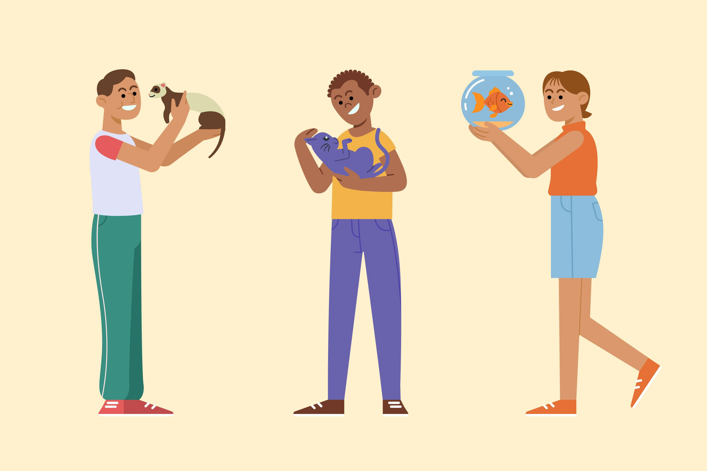
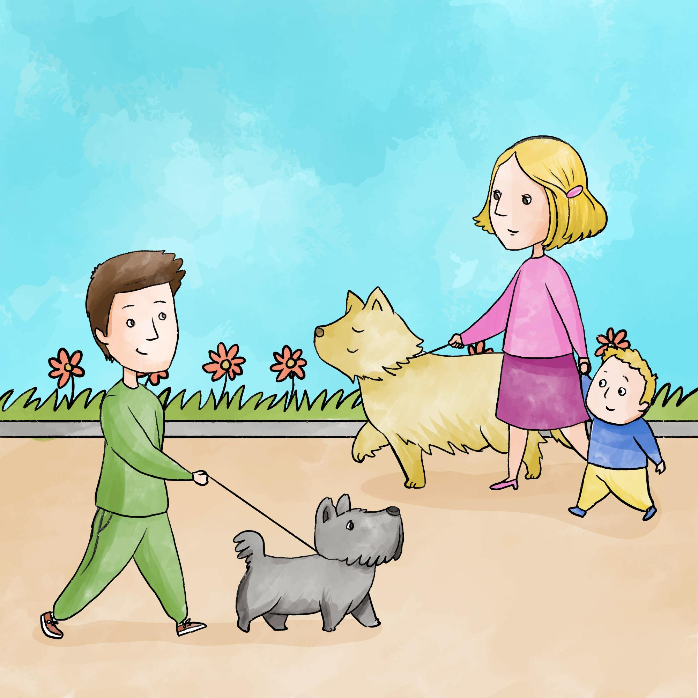
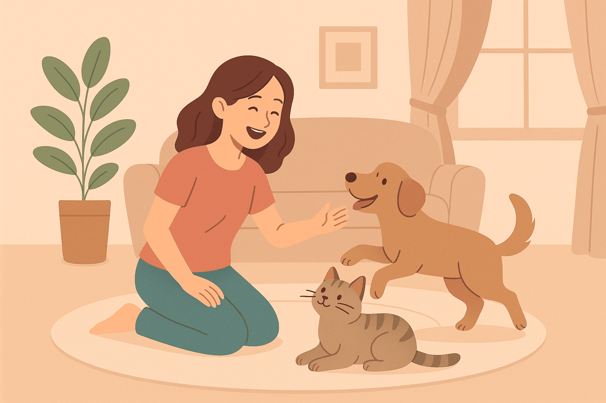

Não existe recompensa maior

de vê-los alegres e saudáveis em seu novo lar.
Amor, cuidado e carinho para o seu melhor amigo
de vê-los alegres e saudáveis em seu novo lar.

Mudar o destino de um animal de rua.

Milhares de animais aguardam um novo lar.

Adotar é dar amor e segurança.
A PetNest nasceu com o propósito de criar um espaço onde pets encontrem cuidado, carinho e informação de qualidade.
Acreditamos que cada animal merece uma vida saudável, segura e cheia de afeto e que a adoção é uma das formas mais bonitas de transformar vidas.
Com o principal objetivo de incentivar a sinalização de animais abandonados, pois informar sobre um pet em situação de risco é um ato de proteção e responsabilidade. Através dessa atitude, aumentamos as chances de resgate, cuidados adequados e, quem sabe, um novo lar cheio de amor.
Oferecemos conteúdos educativos, na PetNest acreditamos que cada animal merece um lar e estamos aqui para apoiar quem decide fazer a diferença.
Assista ao vídeo abaixo e evite este tipo de situação:
A denúncia pode ser feita pela Polícia Militar (190), pela Delegacia de Polícia Civil, pelo aplicativo Proteção Animal (caso disponível no seu estado) ou pelo Disque Denúncia (181), de forma anônima.
No momento não realizamos resgates, mas podemos orientar e indicar protetores independentes ou ONGs da sua região.
Você pode acessar a seção “Adote” no menu de navegação do site. Ao clicar no botão “Adote”, será aberta a página “Encontre seu pet”, onde você poderá pesquisar animais disponíveis na sua região. Também estarão disponíveis os contatos da pessoa responsável pelo anúncio para que você possa entrar em contato.
Não, trabalhamos com lares temporários e rede de protetores parceiros.